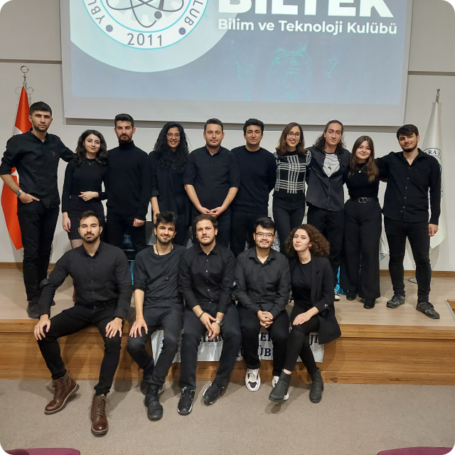

HAKKIMIZDA
Ankara Yıldırım Beyazıt Üniversitesi Bilim ve Teknoloji Topluluğu, 2011 yılında bilimsel düşünceyi teşvik etmek amacıyla kurulmuş öğrenci topluluğudur. Amacımız, üyelerimizin teknik bilgi ve becerilerini geliştirirken inovatif projeler üretmelerine olanak sağlamaktır. Öğrenciler arasında bilimsel araştırmaları yaygınlaştırmak ve teknoloji dünyasındaki yenilikleri takip ederek farkındalık yaratmak için çeşitli etkinlikler, seminerler ve atölyeler düzenliyoruz. Bilim ve teknolojiyi hayatın her alanına entegre etmek için çalışan dinamik ve yenilikçi bir ekibiz. Geleceğin lider mühendisleri, bilim insanları ve teknoloji uzmanları olarak sorumluluklarımızın bilincindeyiz ve bu doğrultuda hareket ediyoruz.